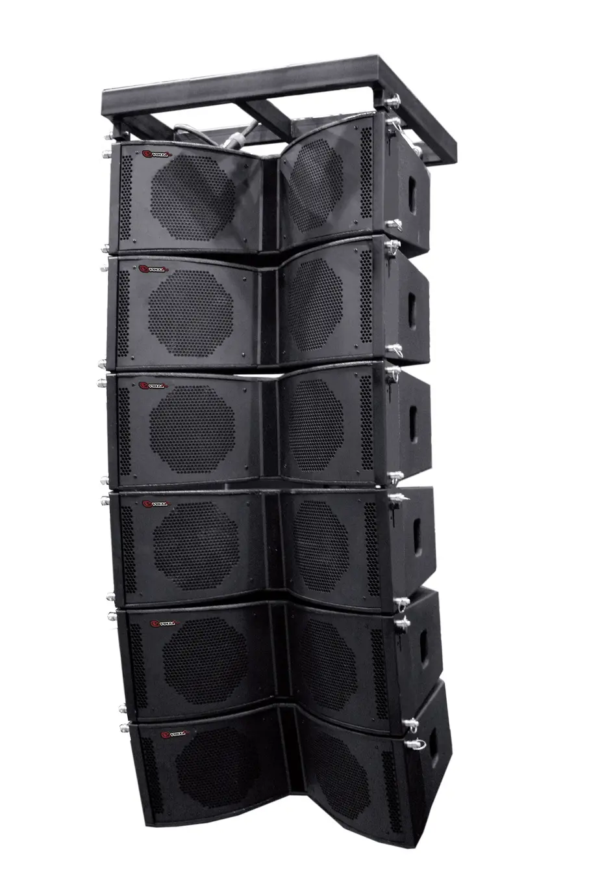

Линейные массивы
Линейные массивы Volta — это профессиональные акустические системы, разработанные для крупных мероприятий и площадок. Они обеспечивают равномерное звуковое покрытие, высокую громкость и минимальные искажения, что делает их идеальными для концертов, фестивалей, театров и корпоративных событий. Благодаря модульной конструкции, линейные массивы легко масштабируются под любые размеры площадок и требования к звуку.